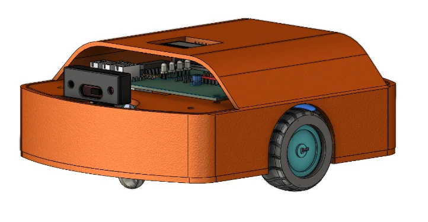

ToF SLAM Autonomous Mobile Robot
A purpose-built differential-drive robot designed from component kinematics to custom 4-layer electronics, combining multizone Time-of-Flight lidar scanning with real-time occupancy grid mapping.
“Designing the chassis from scratch allowed the sensor field of view, drive geometry, and PCB envelope to be resolved together rather than adapted around a generic platform.”
Range Turret
VL53L8CX 8x8 ToF (64 Zones)
Embedded Core
ESP32 Dual-Core + MPU6050
Chassis Kinematics
Dual N20 Encoders + Caster
Mapping Pipeline
Python Teleop + MATLAB SLAM
FIG 1.1
SolidWorks Coordinated Assembly

140 mm Wheelbase
•
2-Layer & 4-Layer Boards
•
Click to Zoom